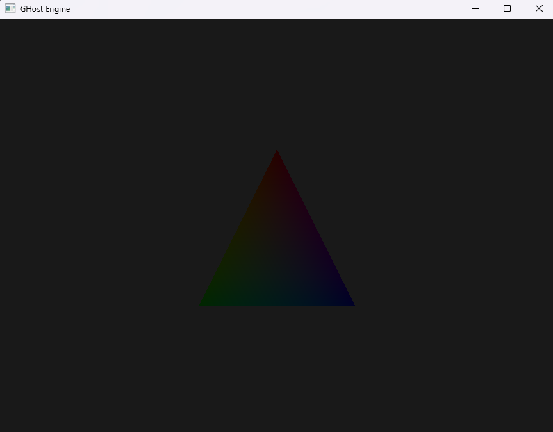
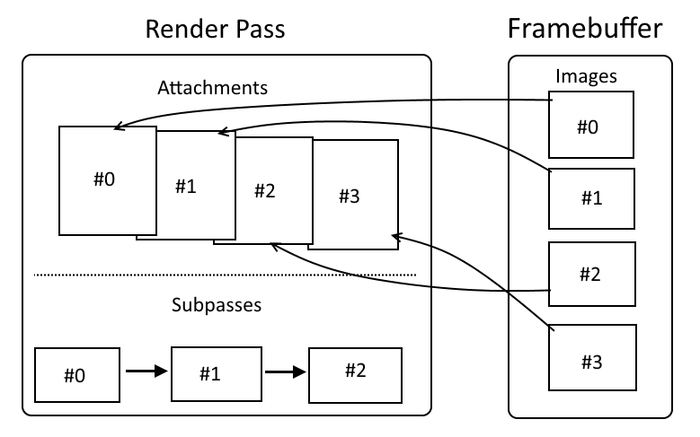

Lua Scripting via Sol2
How GHost Engine embeds Lua 5.4 with Sol2: binding C++ types, exposing the Transform/Input API, and hot-reloading scripts at runtime.
Posted on May 20, 2026
Deep dive into the scripting layer [Read More]

Recently shipped
Vulkan 1.3 · C++20 · Real-Time 3D Engine
How GHost Engine embeds Lua 5.4 with Sol2: binding C++ types, exposing the Transform/Input API, and hot-reloading scripts at runtime.
Posted on May 20, 2026
Deep dive into the scripting layer [Read More]
Generating infinite chunked terrain with fractional Brownian motion, domain warping, hydraulic erosion simulation, and camera-facing vegetation billboards.
Posted on May 15, 2026
See how the terrain is built [Read More]

Distance-based texture mip streaming across 5 LOD bands, a priority multiplier system based on mesh AABB size, and six-plane frustum culling to skip off-screen geometry entirely.
Posted on May 10, 2026
How we keep the frame budget under control [Read More]

Rendering to a 16-bit float HDR target and converting to display-ready output with three selectable tonemapping curves: linear clamp, ACES filmic, and Hable (Uncharted 2).
Posted on May 5, 2026
HDR tonemapping explained [Read More]

Three-cascade directional shadow mapping at 2048×2048 per cascade, logarithmic/linear split blending, per-cascade light-space matrices, and PCF filtering via a Vulkan comparison sampler.
Posted on April 25, 2026
How CSM works in Ghost Engine [Read More]

The four-pass rendering pipeline: shadow pass, GBuffer fill (albedo/normal/material/depth), full-screen lighting with physically-based Cook-Torrance BRDF, and HDR post-process.
Posted on April 10, 2026
The full rendering pipeline breakdown [Read More]

Generational 32-bit entity IDs, SoA component managers, parent-child transform hierarchies, and the ScriptComponent that connects Lua scripts to the ECS layer.
Posted on March 28, 2026
How the ECS is structured [Read More]

Setting up a window, physical device selection and logical device creation — the very first steps of the engine.
Posted on March 2, 2026
GHostEngine setup walkthrough [Read More]

How GHost Engine structures render passes, subpasses and framebuffer attachments in the Vulkan backend.
Posted on February 15, 2025
Render pipeline deep dive [Read More]
